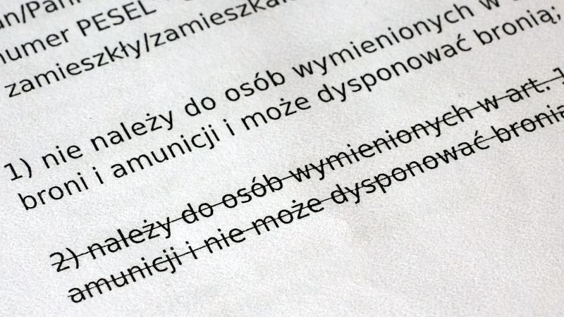

Przed tobą drugie spotkanie z lekarzem: badania do pozwolenia na broń. Uprzednia wizyta u lekarza sportowego była tylko lekką rozgrzewką. Prawdziwa medycyna zaczyna się teraz!
Według Ustawy o broni i amunicji, ubiegając się o pozwolenie na broń, musisz przedstawić pozytywne orzeczenia: lekarskie oraz psychologiczne, oba wystawione przez uprawnionych specjalistów. Wśród wielu durnowatych warunków uzyskania pozwolenia, ten akurat stanowi jeden z nielicznych wyjątków, bo ma racjonalne uzasadnienie. Nie chcemy przecież, żeby broń palną nosił ktoś z morderczymi zaburzeniami psychicznymi, osoba niewidoma, lub na przykład mdlejąca w losowych momentach. To zupełnie tak samo jak z prowadzeniem samochodu - aby dostać prawo jazdy, też musisz wykazać się jakimś minimalnym poziomem zdrowia i nikogo to nie dziwi. Zatem idź na badania bez poczucia krzywdy, bo to dobrze dla nas wszystkich, że one są.
Potrzebujesz zdobyć dwa oddzielne orzeczenia: jedno od uprawnionego lekarza, oraz drugie od uprawnionego psychologa. Ustawa o broni i amunicji definiuje zbiór dysfunkcji ciała i umysłu, które skreślają kandydata na posiadacza broni. Zadaniem lekarza i psychologa jest potwierdzenie, że nie cierpisz na żadną z nich.
Zanim zaczniesz organizować sobie wycieczkę do lekarza, zbierz wszystkie dotychczasowe papiery niezbędne do uzyskania pozwolenia na broń. Omówię je dokładniej w opisie następnego kroku; na razie upewnij się, że masz każdy z następujących dokumentów:
To ważne dlatego, że w momencie składania podania o pozwolenie na broń, oba orzeczenia, lekarskie i psychologiczne, nie mogą być starsze niż trzy miesiące. Jeśli wystąpisz o pozwolenie po trzech miesiącach od wykonania badań, to nie zostaną one zaakceptowane i będziesz musiał je powtórzyć. A nie są one tanie!
Szkoda byłoby, gdybyś odbył badania lekarskie, a później musiał je powtarzać i ponownie za nie płacić, bo niespodziewanie dłużej czekałeś na uzyskanie któregoś z wyżej wymienionych dokumentów. Zwłaszcza licencja zawodnicza jest tutaj ryzykowna. Miejmy nadzieję, że to już nie wróci, ale bywało, że PZSS dostawał zatwardzenia i ludzie czekali na swoje licencje po kilka miesięcy! Podobnie potwierdzenie członkostwa; w dziadowskich klubach wydanie tego papierka potrafi urosnąć do rangi problemu nie do przejścia, wymagającego łaskawego zaangażowania kilku osób z zarządu klubu. Nie można też pominąć niespodzianek, jakie potrafi zrobić Poczta Polska, bo w tej instytucji mają specyficzne poczucie humoru i list z Wrocławia do Wrocławia potrafi iść siedem tygodni, oczywiście o ile nie zgubi się po drodze, bo wówczas to w ogóle kaplica.
Nie ma sensu ryzykować. Lepiej nie spieszyć się i wpaść do lekarza nieco później, ale za to spać spokojnie mając komplet dokumentów. Jeśli jeszcze nie masz wszystkich papierów, to przerwij czytanie i wróć do tego tekstu jak już je zgromadzisz.
Listę lekarzy i psychologów upoważnionych do orzekania w sprawach pozwoleń na broń prowadzi Komendant Wojewódzki Policji. Ponieważ mamy XXI wiek, należy oczekiwać, że lista ta jest dostępna na witrynie internetowej twojej Komendy Wojewódzkiej. Jeśli tak nie jest, to trzeba się o nią upomnieć, w końcu nie dla siebie samych ją prowadzą.
Nie zaszkodzi też popytać o wskazówki w swoim klubie sportowym lub stowarzyszeniu kolekcjonerskim, a także zarzucić pytanie w internet aby poznać opinie o poszczególnych lekarzach. Na koniec zadzwoń do wybranego gabinetu, dowiedz się co, jak i za ile, oraz ustal termin swojej wizyty. To wszystko.
Niestety komplet badań słono kosztuje. Ceny różnią się nieznacznie pomiędzy gabinetami, ale nastaw się na łączny wydatek rzędu nawet 500 złotych (tak, pięciuset!).
Maksymalna opłata za badania lekarskie i psychologiczne jest ograniczona przez UoBiA i wynosi 15% średniej krajowego wynagrodzenia.
Są podobne do tych, jakie przechodzi taksówkarz lub kierowca autobusu. Organizacyjnie przypominają nieco okresowe badania medycyny pracy. Wizytujesz kilka gabinetów zbierając pieczątki, a na końcu stajesz przed lekarzem orzecznikiem, który zbiera do kupy badania cząstkowe i na ich podstawie wydaje końcową opinię. Zwykle można to załatwić w ramach jednej wizyty w przychodni. Jeśli nie, to w najgorszym razie będziesz musiał odbyć dwie wizyty: jedną u psychologa i drugą u lekarza.
Oto jak wyglądały moje badania. Twoje nie będą się istotnie różnić, co najwyżej poszczególne etapy odbędą się w innej kolejności.
Przeprowadził podstawowy wywiad lekarski, osłuchał mnie stetoskopem, zmierzył mi ciśnienie krwi, skontrolował mój zmysł równowagi (przejście wzdłuż linii, stanie na jednej nodze z zamkniętymi oczami) i sprawdził podstawowe odruchy neurologiczne (puknięcie młotkiem w kolano, reakcja źrenic). Czyli w sumie nieco bardziej szczegółowe, ale wciąż rutynowe badanie. Dwadzieścia minut i cześć.
Badanie miało formę swobodnej rozmowy z lekarzem psychiatrą. Oprócz wywiadu na temat chorób psychicznych w rodzinie (zwykle są one dziedziczne!), psychiatra będzie miał do ciebie kilka pytań. Tylko z pozoru są one przypadkowe. Psychiatra wie jak rozpoznać pewne sygnały alarmowe, świadczące o możliwych kłopotach ze zdrowiem psychicznym. Ty nie wiesz, więc nie kombinuj, tylko odpowiadaj zgodnie z prawdą. Badanie nie trwa dłużej niż to u lekarza ogólnego.
Ten etap trwał sporo ponad dwie godziny. Najpierw dostałem ankietę do wypełnienia; zawierała ona dość oczywiste pytania na temat odpowiedzialności, relacji rodzinnych i stosunku do przemocy. Następnie wypełniłem dwa testy osobowości. Pierwszy z nich składał się z około setki prostych pytań zamkniętych, na które trzeba było udzielić odpowiedzi tak
albo nie
. W czasie gdy pierwszy test był oceniany, dostałem drugi, będący ciągiem łamigłówek typu dopasuj brakujący obrazek
. Zawierał kilkadziesiąt zadań, z których tylko początkowe były trywialne. W miarę postępu testu, kolejne zagadki wymagały coraz dłuższego kombinowania.
Nie lekceważ badań psychologicznych, nawet jeśli wyglądają one niczym jakaś szarlataneria. Osobiście znam dwa przypadki ludzi, którzy nie przeszli ich pozytywnie.
Po rozwiązaniu testów i krótkim oczekiwaniu, psycholog zaprosił mnie do gabinetu na krótką rozmowę. Rozmowa ta była podobna do uprzedniej z psychiatrą; jednak bardziej dotyczyła posiadania broni, motywacji, planów życiowych i poglądów na świat. Muszę przyznać, że całość badań psychologicznych była dość męcząca.
Zupełnie standardowe badanie. Czytanie coraz to mniejszych literek z tablicy, w okularach i bez (noszę szkła). Następnie sprawdzenie widzenia barwnego na tablicach Ishihary oraz sprawdzenie widzenia przestrzennego na stereogramach, czyli po ludzku: kolorowe cyferki i obrazki 3D. Każdy okularnik zna te badania na pamięć.
Na podstawie zgromadzonych opinii cząstkowych wydanych przez pozostałych specjalistów, lekarz orzecznik wydał końcową, pozytywną opinię. Ten etap był zdecydowanie najkrótszy.
Jako strzelec sportowy i kolekcjoner broni palnej, opisywane tu badania przechodzisz jednorazowo, starając się o pozwolenie na broń. Standardowo nie ma wymogu okresowego powtarzania tych badań. Co jednak w sytuacji, gdy dzisiaj jesteś zdrowy, a za siedem lat zachorujesz na schizofrenię i zaczniesz brać narkotyki?
Posiadacze pozwoleń na broń do celów ochrony osobistej, ochrony osób i mienia, oraz do celów łowieckich, muszą powtarzać badania co pięć lat. Ale sportowcy i kolekcjonerzy robią je tylko raz.
Istnieje sprawny mechanizm kontroli. W sytuacji podejrzenia utraty zdrowia, szczególnie psychicznego, Policja ma prawo skierować cię na obowiązkowe badania kontrolne. Nie możesz odmówić, pod groźbą utraty swoich pozwoleń na broń. Niestety musisz też za te badania zapłacić.
Nie można jednak wysłać cię na badania kontrolne z czystej złośliwości. Podejrzenie utraty zdrowia musi być uzasadnione. Na przykład, jeśli zaczną się pojawiać regularne i zasadne wezwania Policji do głośnych popijaw, które urządzasz podczas ciszy nocnej, to można przypuszczać, że popadłeś w alkoholizm. Wówczas zostaniesz wezwany do odbycia ponownych badań.
W pewnych sytuacjach, Policja może zakwestionować przedłożone przez ciebie pozytywne orzeczenia. W takim przypadku zostaniesz skierowany na badania odwoławcze. Tym razem nie wybierasz gabinetu; zamiast tego otrzymasz wezwanie do ośrodka, w którym odbędą się te badania. Szczęście w nieszczęściu, że w tym przypadku nie musisz za to płacić, bo koszt badań odwoławczych obciąża odwołującego, którym w tym przypadku nie jesteś ty. Same badania wyglądają tak samo jak badania w normalnym trybie, z tą różnicą, że lekarz wie skąd trafiłeś i wie, że twoje podstawowe badania zostały zakwestionowane. Wynik takich badań odwoławczych jest ostateczny i nie podlega dalszym odwołaniom.
Taka sytuacja nie zdarza się często i nie zdarza się bez powodu. Skierowanie na badania odwoławcze grozi ci, jeśli Policja ma realne powody uważać, że nie powinieneś mieć broni.
Na przykład jeśli regularnie zbierasz mandaty drogowe za przekroczenie prędkości. Chodzi tu o notoryczną tendencję, a nie sporadyczny mandat jaki zdarzył się chyba każdemu kierowcy. Mandaty, nawet liczne, same w sobie nie stanowią prawnej podstawy do odmowy wydania pozwolenia na broń. Pozwalają jednak przypuszczać, że jesteś nieodpowiedzialnym gówniarzem bez wyobraźni, któremu lepiej nie dawać broni palnej do rąk. Wówczas Policja prawdopodobnie zażąda dodatkowych badań.
Podobnie w przypadku gdy masz na koncie zatarty (przedawniony) wyrok za pobicie, kradzież lub prowadzenia auta po pijaku. Wyrok jest zatarty, więc formalnie jesteś wówczas niekarany i nie można odmówić ci wydania pozwolenia. Ale skoro byłeś w stanie dokonać przestępstwa to twoja mentalność stoi pod znakiem zapytania. W takim przypadku, prawdopodobieństwo skierowania na ponowne badania graniczy z pewnością.
Wyluzuj, to tylko przykłady. Mam nadzieję, że żaden z nich nie dotyczy ciebie. Jak widzisz, jest to taka awaryjna furtka dla Policji, żeby mogła utrudnić uzyskanie pozwolenia na broń w przypadku jakichś wątpliwości, które formalnie nie mogą być podstawą odmowy.
Po pierwsze: nie panikuj. Po drugie: zastanów się uczciwie, dlaczego otrzymałeś negatywne orzeczenie? Może jednak masz kłopoty ze zdrowiem lub psychiką i liczyłeś na to, że to się nie wyda? Wyda się. Badają cię fachowcy, którzy wiedzą co robią. To, że nie będziesz miał własnej broni palnej, to nie koniec świata. Droga do strzelectwa nie jest dla ciebie zamknięta; opisałem już na blogu opcje niewymagające pozwolenia na broń, skorzystaj z nich i bądź szczęśliwy.
Przestrzegam przed próbami ponownego podchodzenia do badań w innych gabinetach. Co prawda nie ma zakazu próbowania do skutku, ale w każdym przypadku negatywnego orzeczenia, zarówno lekarz jak i psycholog powiadamiają o tym fakcie Policję. Dzięki temu, nawet gdy do podania o pozwolenie na broń załączysz pozytywne orzeczenia uzyskane za którymś podejściem, Policja i tak będzie wiedzieć o negatywnym wyniku twoich wcześniejszych badań. W takiej sytuacji, na pewno zostaniesz skierowany na badania odwoławcze w trybie opisanym powyżej.
Co jednak, jeśli jesteś pewien, że twoje zdrowie jest OK, natomiast to lekarz pokpił sprawę? Wówczas masz prawo odwołania się od wyniku badań dokładnie tak samo jak Policja. Odwołanie składasz na piśmie u specjalisty, który wystawił ci negatywne orzeczenie. On skieruje twoje odwołanie do odpowiedniego ośrodka, w którym zostaniesz przebadany ponownie. Jako odwołujący, musisz też zapłacić za badania odwoławcze. Ich wynik jest ostateczny.
Uprawniony lekarz i psycholog wykonują znacznie poważniejszą pracę niż lekarz sportowy. W końcu od ich decyzji zależy, czy dostaniesz prawo do posiadania broni palnej, czy pozostanie ci strzelanie z papierowej torby po czereśniach. Czy łatwo jest uzyskać pozytywne orzeczenie? I tak, i nie.
Z biznesowego punktu widzenia, orzecznik, który niechętnie wystawia pozytywne opinie, szybko zacznie mieć kłopoty finansowe. Momentalnie rozniesie się fama o strasznym gabinecie, w którym odrzucają ludzi za okulary i katar sienny. W efekcie kandydaci na strzelców po prostu przestaną do niego przychodzić. Nawet jeśli taki gabinet nie zbankrutuje, to jego dochody zostaną znacznie uszczuplone i lekarz będzie musiał jeździć starym, bo aż pięcioletnim mercedesem. Nie ma się z czego śmiać, dla niektórych to dramat! Nie leży więc w interesie lekarza jakiekolwiek utrudnianie uzyskania pozytywnego orzeczenia - tego możemy być pewni.
Z drugiej strony, nie wyobrażam sobie, żeby jakikolwiek orzecznik, w imię zarobienia paruset złotych, zaryzykował odpowiedzialność za wydanie pozytywnej opinii komuś, kto faktycznie nie powinien dysponować bronią palną. Nawet nie mówię tu o przypadku jakiegoś psychopaty, który chciałby zrobić masakrę w szkole lub w kościele. Myślę raczej o trywialnym scenariuszu, gdy na strzelnicy dojdzie do wypadku, bo ktoś dostanie ataku padaczki akurat w czasie strzelania. W takiej sytuacji, elementem dochodzenia z pewnością będzie pytanie kto badał tego człowieka i dopuścił go do posiadania broni?
. Lekarz miałby wówczas bardzo poważne nieprzyjemności.
Jak widzisz, w naturalny sposób powstał tu samoregulujący się mechanizm, który powstrzymuje zarówno zbytnie zacieśnianie jak i luzowanie sita, jakim są opisane tu badania. W Polsce nie zdarzają się wypadki z bronią spowodowane kłopotami ze zdrowiem jej posiadacza. Wobec tego, można z całą pewnością uznać, że poziom badań jest akuratny. Jest dobrze tak jak jest, nie ma się czego bać!
Ten artykuł jest częścią kompletnego poradnika, składającego się z następujących rozdziałów: